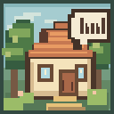

수영장
수영 레인을 예약하고 친구와 연습해요.
여기에서 만날 수 있는 주민
알렉스의 이야기
Can I attend the swimming class?
수영 수업에 참여할 수 있나요?

WORDVILLE마을 지도를 불러오는 중입니다…
주민들과 만나고, 새로운 단어를 배워요.
배경 그림에서 확인되는 일부 장소는 터치해 이동할 수 있습니다. 전체 장소 17곳과 주민의 집은 장소 둘러보기 버튼에서 선택하세요. 확대·축소와 구역 전환을 지원합니다.
주민 스케줄은 기기 현지 시각 00:00~24:00 기준으로 반복됩니다. 시간 미리보기에서 원하는 시각을 선택할 수 있습니다.
기존 주민 전용 단어 대신 해커스 VOCA의 Day, 60개 단위 페이지, PDF 원본 쪽을 직접 선택할 수 있습니다.
00:00부터 24:00까지 1시간 단위로 생활 장소와 행동을 지정합니다. 변경 내용은 이 기기에 저장됩니다.
아래 버튼으로 장소를 바꿔 보세요. 한 번에 한 장소만 표시됩니다.
수영 레인을 예약하고 친구와 연습해요.
여기에서 만날 수 있는 주민
Can I attend the swimming class?
수영 수업에 참여할 수 있나요?
장소별 추천 단어에 제한되지 않습니다. 단어장 전체에서 검색해 원하는 주민과 영어 대화를 연습할 수 있습니다.
준비된 영어 대화 10개를 사용합니다. 사용자가 입력한 답변은 AI 채점 또는 서버 전송 없이 예시와 비교합니다.
Day별 상태 불러오는 중…
기기 내부에 저장됩니다. 앱을 삭제하기 전에 계정 화면에서 클라우드 전체 백업 완료 상태를 확인하세요.
직접 체크한 단어만 상태별 집계합니다. 체크하지 않은 단어는 미기록으로 표시합니다.
선택한 Day에서 기록된 날짜별 상태 체크 횟수입니다. 상태별 개선 정도를 뜻하지 않습니다.
저장 날짜별로 모아보고 사진을 누르면 해당 단어 카드가 열립니다.
기존에 저장한 사진은 저장 날짜를 확인할 수 없어 ‘저장 날짜 미상’으로 표시합니다. 여러 장 이미지 보관함은 기기에 저장됩니다. 삭제 전 계정에서 전체 백업 완료를 확인하세요.
단어 2개를 연결하고 직접 개념 이름을 지어 보세요.
주민 설명은 준비된 예문과 규칙으로 구성됩니다.
이 앱은 기존 Wordville과 별도로 설치됩니다. 기존 앱과 그 안의 기록은 그대로 남습니다.
옮긴 기록과 이미지를 확인할 때까지 기존 앱을 유지하세요.
로그인하면 단어별 이미지를 서버에 저장하고 다른 기기에서도 불러올 수 있어요. 학습 점수는 현재 기기에 저장됩니다.
로그인 후 학습 진도, 상태, 생각코딩 노트, 단어 이미지, 주민 일정, 마지막 Day 선택을 비공개 서버에 백업합니다. 앱을 삭제하면 기기 데이터는 지워지므로 삭제 전에 백업 성공을 확인하세요.
로그인 후 백업 상태 확인
백업 준비 중…
기록 변경 시 자동 백업을 시도합니다. 서버 기록과 기기 기록이 충돌하면 자동 덮어쓰지 않습니다. 인터넷 연결 및 Wordville 계정이 필요합니다.